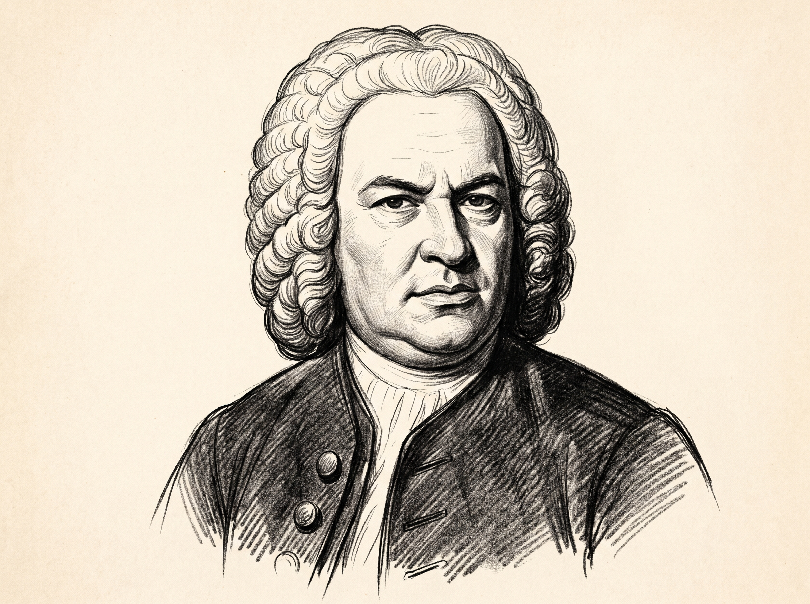
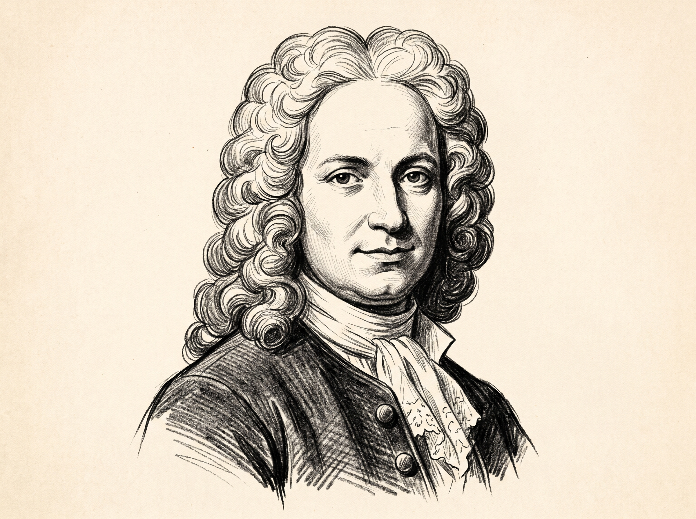
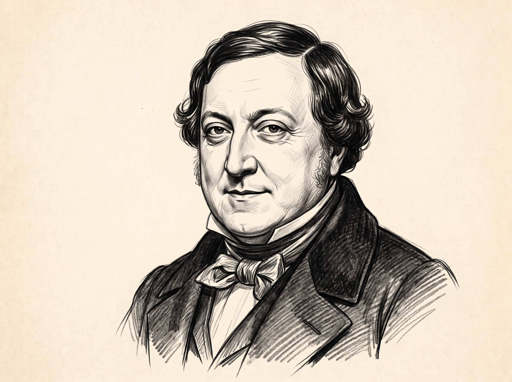

Our Masterpieces
Browse through our exquisite collection of classical compositions.

Symphony No. 5
Ludwig van Beethoven
Eine kleine Nachtmusik
Wolfgang Amadeus Mozart

Cello Suite No. 1
Johann Sebastian Bach

Four Seasons - Spring
Antonio Vivaldi
Non, Je ne regrette rien
Edith Piaf

William Tell Overture
Gioachino Rossini